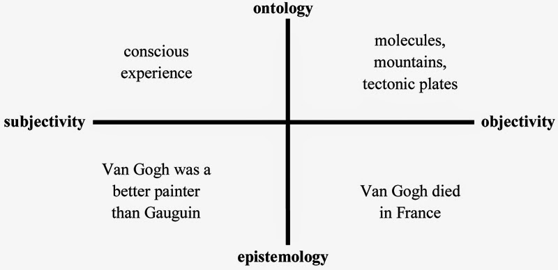
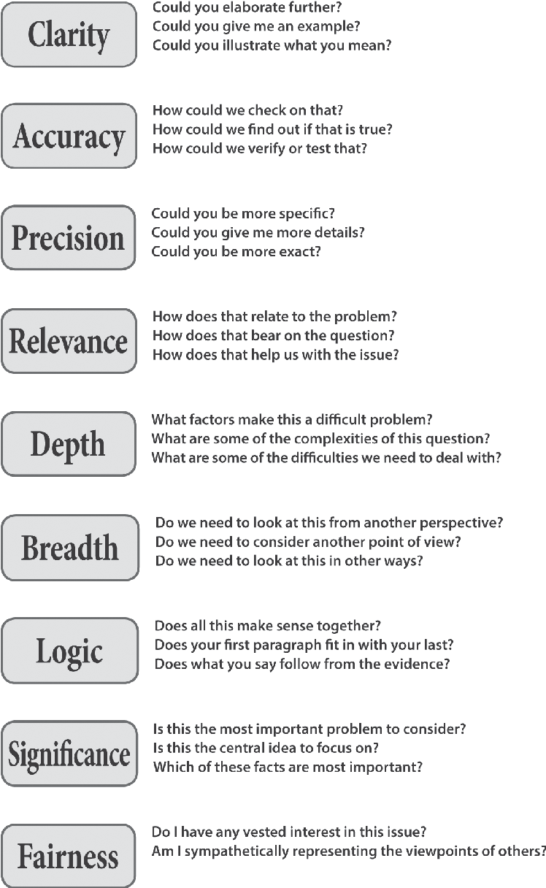

<title>Objective and Subjective: A Useless Distinction?</title>
<meta name="viewport" content="width=device-width, initial-scale=1" />
<style>
      /* Scoped styles for Blogger dark themes. No white table backgrounds. */
      .ep-post {
        color: inherit;
        background: transparent;
        font-family:
          system-ui,
          -apple-system,
          BlinkMacSystemFont,
          "Segoe UI",
          Roboto,
          Helvetica,
          Arial,
          sans-serif;
        line-height: 1.65;
        font-size: 1rem;
        max-width: 980px;
        margin: 0 auto;
      }

      .ep-post * {
        box-sizing: border-box;
      }

      
      .ep-post {
        box-sizing: border-box;
        width: min(100%, 980px);
        padding-left: 1rem;
        padding-right: 1rem;
        overflow-wrap: break-word;
      }

      .ep-post img,
      .ep-post video,
      .ep-post canvas,
      .ep-post svg {
        max-width: 100%;
        height: auto;
      }

      .ep-post figure {
        margin: 1.15em 0;
        max-width: 100%;
      }

      .ep-post .mermaid {
        max-width: 100%;
        overflow-x: auto;
      }

      .ep-post .mermaid svg {
        max-width: 100%;
        height: auto;
      }

.ep-post h1,
      .ep-post h2,
      .ep-post h3,
      .ep-post h4 {
        line-height: 1.25;
        margin: 1.8em 0 0.65em;
        color: inherit;
      }

      .ep-post h1 {
        font-size: 2rem;
        border-bottom: 1px solid
          color-mix(in srgb, currentColor 24%, transparent);
        padding-bottom: 0.35em;
      }

      .ep-post h2 {
        font-size: 1.45rem;
        border-bottom: 1px solid
          color-mix(in srgb, currentColor 16%, transparent);
        padding-bottom: 0.25em;
      }

      .ep-post h3 {
        font-size: 1.15rem;
      }

      .ep-post p {
        margin: 0.75em 0;
      }

      .ep-post ul,
      .ep-post ol {
        margin: 0.65em 0 0.9em 1.35em;
        padding: 0;
      }

      .ep-post li {
        margin: 0.22em 0;
      }

      .ep-post a {
        color: inherit;
        text-decoration: underline;
        text-underline-offset: 0.16em;
      }

      .ep-post strong {
        font-weight: 700;
      }

      .ep-post code {
        background: color-mix(in srgb, currentColor 10%, transparent);
        color: inherit;
        border: 1px solid color-mix(in srgb, currentColor 16%, transparent);
        border-radius: 0.25rem;
        padding: 0.08em 0.28em;
        font-family:
          ui-monospace, SFMono-Regular, Menlo, Consolas, "Liberation Mono",
          monospace;
        font-size: 0.92em;
      }

      .ep-post pre {
        background: color-mix(in srgb, currentColor 7%, transparent);
        color: inherit;
        border: 1px solid color-mix(in srgb, currentColor 18%, transparent);
        border-radius: 0.6rem;
        padding: 1rem;
        overflow-x: auto;
      }

      .ep-post pre code {
        background: transparent;
        border: 0;
        padding: 0;
      }

      .ep-post blockquote {
        margin: 1em 0;
        padding: 0.2em 0 0.2em 1em;
        border-left: 3px solid color-mix(in srgb, currentColor 32%, transparent);
        color: color-mix(in srgb, currentColor 88%, transparent);
      }

      /* =========================================================
   Readable Blogger tables
   ========================================================= */

      .ep-post .table-wrap {
        width: 100%;
        max-width: 100%;
        overflow-x: auto;
        overflow-y: hidden;
        -webkit-overflow-scrolling: touch;
        margin: 1.15em 0;
        border: 1px solid color-mix(in srgb, currentColor 16%, transparent);
        border-radius: 0.65rem;
        background: transparent !important;
      }

      .ep-post table {
        width: 100%;
        border-collapse: collapse;
        table-layout: fixed;
        margin: 1.15em 0;
        font-size: 0.9em;
        line-height: 1.45;
        color: inherit;
        background: transparent !important;
      }

      .ep-post .table-wrap table {
        margin: 0;
      }

      /* Wider tables can scroll, but text still wraps instead of becoming giant. */
      .ep-post table.wide-table {
        min-width: 760px;
      }

      .ep-post table.extra-wide-table {
        min-width: 920px;
      }

      /* Long tables should feel more like a reference sheet. */
      .ep-post table.long-table {
        font-size: 0.86em;
      }

      .ep-post thead,
      .ep-post tbody,
      .ep-post tr,
      .ep-post th,
      .ep-post td {
        background: transparent !important;
        color: inherit;
      }

      .ep-post th,
      .ep-post td {
        border: 1px solid color-mix(in srgb, currentColor 22%, transparent);
        padding: 0.48em 0.6em;
        vertical-align: top;
        white-space: normal;
        overflow-wrap: break-word;
        word-break: normal;
        hyphens: auto;
      }

      .ep-post th {
        font-weight: 700;
        text-align: left;
        background: color-mix(in srgb, currentColor 9%, transparent) !important;
      }

      .ep-post tr:nth-child(even) td {
        background: color-mix(in srgb, currentColor 4%, transparent) !important;
      }

      /* First columns are usually labels/terms. Keep them compact but readable. */
      .ep-post table:not(.extra-wide-table) th:first-child,
      .ep-post table:not(.extra-wide-table) td:first-child {
        width: 22%;
      }

      /* Two-column explanatory tables: give the explanation more room. */
      .ep-post table.two-col th:first-child,
      .ep-post table.two-col td:first-child {
        width: 28%;
      }

      .ep-post table.two-col th:nth-child(2),
      .ep-post table.two-col td:nth-child(2) {
        width: 72%;
      }

      /* Three-column reference tables. */
      .ep-post table.three-col th:first-child,
      .ep-post table.three-col td:first-child {
        width: 22%;
      }

      .ep-post table.three-col th:nth-child(2),
      .ep-post table.three-col td:nth-child(2) {
        width: 43%;
      }

      .ep-post table.three-col th:nth-child(3),
      .ep-post table.three-col td:nth-child(3) {
        width: 35%;
      }

      /* Keep short utility columns compact when manually applied. */
      .ep-post th.short,
      .ep-post td.short,
      .ep-post th.date,
      .ep-post td.date,
      .ep-post th.number,
      .ep-post td.number {
        width: 1%;
        white-space: nowrap;
      }

      /* Use on text-heavy columns when editing by hand later. */
      .ep-post th.long,
      .ep-post td.long,
      .ep-post th.description,
      .ep-post td.description,
      .ep-post th.notes,
      .ep-post td.notes {
        min-width: 14rem;
        line-height: 1.5;
        white-space: normal;
        overflow-wrap: break-word;
      }

      /* Dense option for especially long tables. */
      .ep-post table.dense th,
      .ep-post table.dense td {
        padding: 0.38em 0.5em;
        font-size: 0.96em;
        line-height: 1.42;
      }

      /* Math support */
      .ep-post .mjx-container {
        overflow-x: auto;
        overflow-y: hidden;
        max-width: 100%;
      }

      .ep-post .math-block {
        margin: 1em 0;
        overflow-x: auto;
      }

      @supports not (color: color-mix(in srgb, white 50%, black)) {
        .ep-post h1,
        .ep-post h2 {
          border-bottom-color: rgba(128, 128, 128, 0.35);
        }

        .ep-post th,
        .ep-post td {
          border-color: rgba(128, 128, 128, 0.35);
        }

        .ep-post th {
          background: rgba(128, 128, 128, 0.12) !important;
        }

        .ep-post tr:nth-child(even) td {
          background: rgba(128, 128, 128, 0.06) !important;
        }

        .ep-post code,
        .ep-post pre {
          background: rgba(128, 128, 128, 0.12);
          border-color: rgba(128, 128, 128, 0.25);
        }

        .ep-post .table-wrap {
          border-color: rgba(128, 128, 128, 0.25);
        }
      }

      /* Mobile: convert tables into readable cards instead of squeezed grids. */
      @media (max-width: 720px) {
        .ep-post {
          font-size: 0.98rem;
        }

        .ep-post h1 {
          font-size: 1.65rem;
        }

        .ep-post h2 {
          font-size: 1.28rem;
        }

        .ep-post .table-wrap {
          overflow-x: visible;
          border: 0;
          border-radius: 0;
          margin: 1.1em 0;
        }

        .ep-post table,
        .ep-post table.wide-table,
        .ep-post table.extra-wide-table,
        .ep-post table.long-table {
          display: block;
          width: 100%;
          min-width: 0;
          max-width: 100%;
          font-size: 0.92em;
          border: 0;
        }

        .ep-post thead {
          display: none;
        }

        .ep-post tbody,
        .ep-post tr,
        .ep-post td {
          display: block;
          width: 100% !important;
        }

        .ep-post tr {
          margin: 0 0 0.9em;
          border: 1px solid color-mix(in srgb, currentColor 20%, transparent);
          border-radius: 0.65rem;
          overflow: hidden;
          background: color-mix(
            in srgb,
            currentColor 3%,
            transparent
          ) !important;
        }

        .ep-post td {
          border: 0;
          border-bottom: 1px solid
            color-mix(in srgb, currentColor 14%, transparent);
          padding: 0.55em 0.7em;
          line-height: 1.5;
        }

        .ep-post td:last-child {
          border-bottom: 0;
        }

        .ep-post td::before {
          content: attr(data-label);
          display: block;
          margin-bottom: 0.18em;
          font-size: 0.78em;
          line-height: 1.25;
          font-weight: 700;
          letter-spacing: 0.02em;
          text-transform: uppercase;
          color: color-mix(in srgb, currentColor 72%, transparent);
        }
      }
    

      /* Phase 2 structural hierarchy */
      .ep-post .ep-part-banner {
        margin: 3.2em 0 1.1em;
        padding: 0.9em 1em;
        border-top: 2px solid color-mix(in srgb, currentColor 34%, transparent);
        border-bottom: 1px solid color-mix(in srgb, currentColor 18%, transparent);
        background: color-mix(in srgb, currentColor 4%, transparent);
      }
      .ep-post .ep-part-banner .ep-part-kicker {
        display: block;
        font-size: 0.78em;
        font-weight: 700;
        letter-spacing: 0.08em;
        text-transform: uppercase;
        opacity: 0.72;
        margin-bottom: 0.18em;
      }
      .ep-post .ep-part-banner .ep-part-title {
        display: block;
        margin: 0.08em 0 0.24em;
        padding: 0;
        border: 0;
        font-size: 1.72rem;
        line-height: 1.2;
        font-weight: 750;
      }
      .ep-post h2.ep-source-section {
        margin-top: 2.2em;
        padding-top: 0.35em;
        border-top: 1px solid color-mix(in srgb, currentColor 14%, transparent);
      }
      .ep-post .ep-toc {
        margin: 0.8em 0 2.2em;
      }
      .ep-post .ep-toc-part {
        margin: 1.15em 0;
      }
      .ep-post .ep-toc-part > p {
        margin-bottom: 0.25em;
        font-weight: 700;
      }
      .ep-post .ep-toc-part ul ul {
        margin-top: 0.25em;
        margin-bottom: 0.4em;
      }


      /* =========================================================
         Phase 4: editorial presentation system
         ========================================================= */
      .ep-post .chapter-lead {
        font-size: 1.04em;
        line-height: 1.68;
        margin: 0.9em 0 1.2em;
      }

      .ep-post .concept-callout,
      .ep-post .formula-callout,
      .ep-post .core-claim {
        margin: 1.05em 0;
        padding: 0.78em 0.95em;
        border-left: 4px solid color-mix(in srgb, currentColor 34%, transparent);
        background: color-mix(in srgb, currentColor 5%, transparent);
        border-radius: 0.35rem;
      }

      .ep-post .formula-callout {
        text-align: center;
        font-weight: 650;
        letter-spacing: 0.01em;
      }

      .ep-post ul.compact-grid,
      .ep-post ul.question-grid {
        list-style-position: outside;
        display: grid;
        grid-template-columns: repeat(2, minmax(0, 1fr));
        gap: 0.28em 1.6em;
        margin: 0.8em 0 1.05em 1.25em;
      }

      .ep-post ul.compact-grid li,
      .ep-post ul.question-grid li {
        break-inside: avoid;
        padding-right: 0.4em;
      }

      .ep-post .checkpoint-block,
      .ep-post .learning-insight-block {
        margin: 1.6em 0;
        padding: 0.35em 1em 0.85em;
        border: 1px solid color-mix(in srgb, currentColor 18%, transparent);
        border-radius: 0.7rem;
        background: color-mix(in srgb, currentColor 3%, transparent);
      }

      .ep-post .checkpoint-block > h2,
      .ep-post .checkpoint-block > h3,
      .ep-post .learning-insight-block > h3 {
        margin-top: 0.65em;
      }

      .ep-post table.comparison-table th:first-child,
      .ep-post table.comparison-table td:first-child {
        width: 32%;
      }

      .ep-post table.worksheet-table th:first-child,
      .ep-post table.worksheet-table td:first-child {
        width: 24%;
      }

      .ep-post table.glossary-table th:first-child,
      .ep-post table.glossary-table td:first-child {
        width: 18%;
      }

      .ep-post table.lens-table th:first-child,
      .ep-post table.lens-table td:first-child {
        width: 24%;
      }

      @media (max-width: 720px) {
        .ep-post ul.compact-grid,
        .ep-post ul.question-grid {
          grid-template-columns: 1fr;
          gap: 0.2em;
        }

        .ep-post .concept-callout,
        .ep-post .formula-callout,
        .ep-post .core-claim {
          padding: 0.7em 0.8em;
        }
      }


      /* =========================================================
         Phase 6: section-level coherence and navigation
         ========================================================= */
      .ep-post .chapter-guide {
        margin: 0.8em 0 1.25em;
        padding: 0.72em 0.9em;
        border: 1px solid color-mix(in srgb, currentColor 16%, transparent);
        border-radius: 0.55rem;
        background: color-mix(in srgb, currentColor 2.5%, transparent);
      }
      .ep-post .chapter-guide p {
        margin: 0.18em 0;
      }
      .ep-post .chapter-guide .chapter-path {
        font-size: 0.94em;
        opacity: 0.88;
      }
      .ep-post .chapter-transition {
        margin: 1.45em 0 0.4em;
        padding-top: 0.85em;
        border-top: 1px solid color-mix(in srgb, currentColor 16%, transparent);
        font-style: italic;
      }
      .ep-post .ep-part-banner .ep-part-summary {
        display: block;
        margin-top: 0.42em;
        max-width: 72rem;
        font-size: 0.92em;
        line-height: 1.5;
        font-weight: 400;
        opacity: 0.82;
      }

      .ep-post header.ep-part-banner {
        clear: both;
        position: relative;
      }
      .ep-post .checkpoint-block + header.ep-part-banner {
        margin-top: 3.8em;
      }
</style>
<script>
      window.MathJax = {
        tex: {
          inlineMath: [
            ["\\(", "\\)"],
            ["$", "$"],
          ],
          displayMath: [
            ["\\[", "\\]"],
            ["$$", "$$"],
          ],
          processEscapes: true,
        },
        options: {
          skipHtmlTags: [
            "script",
            "noscript",
            "style",
            "textarea",
            "pre",
            "code",
          ],
        },
      };
    </script>
<script async="" src="https://cdn.jsdelivr.net/npm/mathjax@3/es5/tex-chtml.js"></script>
<article class="ep-post">
Why is it that people are obsessed with the objective/subjective distinction?
You see these terms in all sorts of debates, calling your opponent “subjective”
kind of means you won the fight. For example I hear them claim that atheism is
subject to radical relativism, or that religious morality is “objective” and
that there is no “solid ground to base claims of morality without god”. A lot of
arguments revolve around this distinction, I think due to this weird
misunderstanding of objectivity and subjectivity. Social construction is
conflated with radical relativism, and while I agree there are people who label
themselves as relativists who also adhere to social constructivism I do not
think that the concept implies a radical relativism of the sort “there are no
facts”. No one can actually be a relativist, you simply cannot survive. So we
must be clear as to what this means in the context of the objective/subjective
distinction and social construction.<br /><br />Let’s start with the notion of
“intelligence”: is it objective or subjective? Well, if objective means “true
independent of human existence or opinion”, then in one sense intelligence is
not objective in that if humans did not exist, no “thing” could have the
property “intelligence” attributed to it (with the exception of animals); but
would the animals know they are intelligent? If animals have a level of
intelligence but are not self aware, would they know whether intelligence is
objective or subjective? Now, let’s put this aside. Let’s call it “objective”,
in the sense that “it is there regardless of whether I want it to be or not”.
This is the “working” definition I see in conversations that are not rigorous.
Have we ever observed intelligence? A cat is objective in the sense that there
is an animal here, which I can see and touch and smell and generally perceive;
so it objectively exists. But if I say the cat is intelligent; what does that
mean? I cannot perceive intelligence directly. I can infer that the concept is
present based on behavior. Psychologists use Factor Analysis and structural
equation models to infer the presence and level of the latent concept
“intelligence”. In other words, there is a theory about “intelligence” and then
we try to “see if it is there” based on observational behavioral data. But how
are we conceptualizing this “intelligence”? Presumably, we have to define it
somehow. This is done by “subjects”; the scientists hypothesizing about it. So
is it subjective? Heat is defined as an increase in thermomolecular activity,
measurable by observing how many particles are bouncing off one another. What is
this definition of intelligence and how are we imposing it upon the world?
“Well, scientists are approaching it objectively”. So there are a set of tools,
methods, frameworks, and paradigms used when being “objective” about a concept?
Let’s assume there is no problem here. Say we agree about all of this; there
“is” objective “intelligence” “in” humans. How do I know if someone is
“intelligent”? Well, I have to observe them! How am I collecting my data? Is
that objective or subjective? After I have collected my data, I need to analyze
it and interpret it; this is done by a subject. But how am I doing the
interpretation and analysis? Are the methods devised by “subjects”? Where is the
“objectivity” here? Let’s suppose a group of scientists agree that a person is
intelligent; does consensus mean “objective”? What about correspondence to the
world? If something is “hot”, there is by definition an increase in
thermomolecular activity. I touch the thing and burn myself. Seems objective to
me. If a person is “intelligent”, but they cannot put a spare tire on their car,
are they actually “intelligent”? My point with all of these questions is that
the objective/subjective distinction makes no difference here. “Intelligence” is
only “objective” in the sense that we are trying to measure it “independent of
our opinions or feelings or attitudes”. But the community has to agree on what
“intelligence” is defined as and how to measure it and what counts as evidence
in favor towards the application of the term. It sure sounds like a lot of
“subjects” doing the meaning making, and hence not a “transcendent unworldly”
“Objective” thing. Surely, few people in the psychological community would say
that their work is nothing but objective and if you listen to a person who loves
the research, they would also agree that it is “scientifically objective”. What
is the difference between Objective and Scientifically Objective; what
difference does that qualifier “scientific” do in our understanding of
objectivity and subjectivity?<br /><br />Now let’s turn to “social
construction”. People are divided by this term and to what it implies or applies
to. Let’s start with an obvious example of a “social fact”. When I go to switch
lanes, by law I must turn on my blinker. I turn on the signal indicating to
others that I am turning, and they yield to me or cut me off or I wait my turn.
It is an “objective fact” that I must do this by law, and “objective fact” that
the blinker provides a signal, or communicates an “objective” message, that I am
about to turn. Maybe I am doing it for another purpose but let’s ignore that for
now. It is also “objective” in a sense that “good” drivers follow the rules of
the road such as this one. There is so much to unpack here. Let’s start with the
first; it is an objective law that I just turn on my turning signal. Surely this
could have been otherwise and is dependent on many other facts and features of
the social world. We could live in a society where this does not exist and in
other countries and at other times, it did not exist. So is it not objective in
that it depends on facts about the social world we have constructed around us?
Is it not contingent on where I live and in what era I live? Let’s move to the
second objective fact; the meaning given to the blinking signal. Take any
blinking signal anywhere: it is objective that it is blinking. But is the
meaning we ascribe to it subjective? In one sense no; it is a fact that it is
supposed to mean you are turning in that direction. This is objective in the
sense that if I die, it will probably still be a fact. It is independent of my
opinions. I could change it if I get a ton of people together to overthrow the
government and tyranny that is suppressing me. But notice that the “meaning” is
also incredibly situational and context bound. A blinking light on a car can
mean more than one thing; if a person had their blinker on for a few miles but
hasn’t attempted to turn, it probably takes on a new “meaning” that they forgot.
When I make this inference, is it subjective? “That they forgot” is the
conclusion I have drawn which either is true or false, there is nothing
subjective about it. But it is also an inference I am making based on my shared
understanding of the world and evidence presented to me at hand. Is inferring
necessarily subjective? If that’s the case then all of science would seem to be
subjective. Or is it the method I am using to make the inference? I am making a
fact claim about my knowledge of the world. “A blinking light factually means
that they intend on turning, but they are not turning. What else can explain
these conflicts?” , I use my evidence and assumptions about the world to form a
conclusion about a fact explaining something. But notice, there are so many
layers of “social construction” and “subjectivity” here; the rules of the road
are not “objective” like the presence of a cat in front of me, they are entirely
dependent on the “social”. It seems like the Objective subjective distinction
here is kind of useless. Now what if I say “that person left on their blinker
and aren’t turning, therefore they are careless” or say that “they are not a
Good driver”. What does any of this mean? We know that if a person puts on a
blinker and evades a collision they are in some sense “objectively” a “good”
driver. We rate them as somehow “objectively” superior. Insurance companies may
even decrease their rates because “objectively” good drivers are less prone to
collisions! And “good” drivers are evidenced “objectively” by their lack of
collisions and traffic violations! But when I call the other person a “not good”
driver, that sure sounds like a “subjective assessment” and that I am giving my
“subjective opinion”. Is this not a conflict, or problem, inherent to this
subjective objective distinction? The rating system is inherently arbitrary in
the sense that if we did not exist, it would not exist, if we rode on horses,
our rating standards would not exist. And almost certainly, these ratings were
created by some “subject” to aid in assessing the probability of their
collision. This sure sounds subjective and a social construction. But at the
same time, we can infer the likelihood of different drivers getting into
collisions based on data like this! We don’t have to simply state “they are
good” or “they suck”, we can take measurements and compare them against past
performance! So that sure seems objective, all the while in this realm of social
construction and subjectivity. We make this distinctions so haphazardly without
understanding how they truly are intertwined. When people say “objective” are
they simply masking this complexity and using the word authoritatively? Can
something both be a social construction and a fact? Where does subjectivity come
into all of this and how does it relate to the all mighty “Objective”?<br /><br />Moving
on to relativism. If a fact is socially dependent, is it not also relative? If
an assessment of “good driver” is depends on some standard, is it not also
relative to it? Is someone intelligent only relative to the definition agreed
upon by those expert psychologists? But I thought intelligence was an objective
fact? If something is relative then it must be subjective, right? These are
rhetorical questions. Obviously there are elements of objectivity and
subjectivity in all events. It is “objective” that a cat is on the couch with me
but the experience is entirely subjective. There is no “objective experience of
having a cat on you” on the sense of what it makes me feel. Is the “cat”
category subjective too? I mean, house cats weren’t always here. And in some
sense our society values the little cuties, so does the existence of this
category depend on our system of value? Seems subjective and objective are very
intertwined.<br /><br />Bayesian probability is used literally all over the
place in science. Some people critique it for being “too subjective” while the
Bayesian says that the frequentist paradigm needs to “model its prior
information”. Is probability objective or subjective? This is actually a huge
topic I do not even want to begin attempting to dive into. Some scientists
criticize Bayesian methods, but in time they have crept into scientific
communities and have become more accepted. My Economics professors mocked the
paradigm while the applied mathematicians were Bayesian purists and made
incredible discoveries; making the economics profession look like child’s play.
The Bayesian will say that modeling prior information allows us to be more
explicit with our assumptions; you can vary these assumptions and see how your
conclusions are perturbed under various scenarios. Frequentists can do this
somewhat arbitrarily with bootstrapping methods. I don’t want to get into
technical details about what paradigm is better but I do want to talk about the
usefulness of Bayesian epistemology.<br /><br />In this notion is the concept of
“confidence”. A lot of probability and statistics use this actually. “Confidence
intervals” reflect a degree of confidence in the probabilities you measured from
a sample of data. I say that I am “confident” in my “ability to drive” meaning
that there is a low probability of a collision. Related notions are that of
reliability and performance. I don’t “know objectively” if there will be a car
crash but I can have varying degrees of confidence based on the information I
have. In other words, my assessment of confidence is subjective and depends on
the information I have available to me. Is anything objective then if it’s
information dependent? Is evidence the key thing making a difference between
this arbitrary distinction we love called Objective vs Subjective? When I am
doing statistical modeling, this is an “objective” way to make discernments and
predictions, but I have to choose the distribution and frame the question, is
that not subjective? The probabilities I estimate are typically conditional
probabilities meaning they depend on something, are those not objective?
Frequentists choose significance levels, what are the objective standards for
this? Bayesians weigh incoming evidence relative to current beliefs and revise
accordingly. That is what Bayes Rule does, you never get to the “Truth”, you
become more and more confident about something as more evidence corroborates or
confirms it; but it could always be the case that you are wrong. Assumed in it
is the notion that subjectivity is all their is; we are the meaning makers, we
are the ones who interpret data and books, and laws and rules. But probably
can’t be subjective right? When I role a dice I have an objective 1/6th chance
of getting any face value. Surely this is objective! What is the probability of
rolling a 3 given the knowledge that the face is odd? 1/3rd!! But what is the
probability of a burglar being in my house given the door is unlocked when I
normally remember to lock it? This seems like an entirely different question and
is not obvious at face value whether the probability we come up with is
“objective” or “subjective” but logically the forms are identical; given some
knowledge, what is the probability of an unknown? The dice case seems simple
because the game is arbitrarily random. It is determined. Your outcomes are
already specified, you just have not seen them yet. The other situation is a bit
different indeed, and it seems like these different types of uncertainties
result in a different qualifier being applied to them: objective or subjective.
So, are there subjective elements of science in the sense that “the judgement is
subject dependent”; yes. Does that mean subjectivity is valueless? No. Look at
the world around us. Note that Bayesianism is about degrees of belief in a
proposition, not world views or paradigms. But simpler propositions like
hypothesis or aspects of theory. My main point is that subjectivists in the
Bayesian view do not think that propositions are not true or false, in other
words they are not relativists. They admit that propositions have one truth
value, but our degree of belief in whatever that truth value is, depends on
information, priors assumptions, background knowledge and is ultimately
subjectively assessed. So it is a statement about how we can come to know the
world, and aspects about the world, expressed in degrees of confidence and
belief which are ultimately formed on the observations we see around us. The
dice problem is “objective” in the sense that we have complete information about
the process that generates the data, and can effectively estimate the
probabilities with certainty. If you know all of the information in the world,
then a dice role becomes deterministic. You can predict it’s exact location if
you knew everything relevant to the process. “Todays posterior is tomorrows
prior” reflects the subjectivist paradigm. My prior assessment of the
probabilities will update when I get new information; in other words my
subjective assessment of the truth will change as my information base changes.
This does not say anything about truth being itself, subjective. This is what it
means to be rational according to this epistemology. And if being rational is to
be “objective”, then we are updating beliefs in the most rational, logical, and
coherent way.<br /><br />Back to my subjective assessment of the driver who left
the blinker on. Given the knowledge of the world I have, I’ve made the
assessment that they probably forgot to turn it off. It seems like reasonable,
rational, and logical explanation of the observation. Nevertheless someone can
dismiss me by saying “you are just subjective, I am Objective and I believe
otherwise”. My explanation can be different if I know a bit more information;
given that we know people who leave their blinkers on either do by accident or
purposefully because they are jokesters, and that I am in a high population of
jokers, it’s possible that guy is just messing with us. Or, it is common that
people who leave blinkers on do so because they forgot, but I know the guy
driving the car and he’s a jokester so therefore maybe he is just messing with
us and I can override the alternative explanation. My inference depends on my
knowledge. And the degree of reliability of the knowledge. Does that just mean I
am being subjective and anyone can dismiss me? I am using evidence, logic, and
sound reasoning. I might be wrong but it doesn’t sound unreasonable to believe
it, despite it being subjective. I am sure we wouldn’t dismiss all inference on
the basis that we are information constrained? Again, the subjective vs
objective distinction is kind of useless. And if I judge the driver as “good” or
“bad” does that mean it’s entirely subjective and judgement? Supposed my
standard is to preserve human life and avoid unnecessary risk, and a person is
speeding at 100 mph in a school zone, I’m sure it doesn’t seem subjective to
state that he is driving unsafely and is a bad driver. It does seem that I have
some form of objective standards, given then likelihood of a crash that is
objective on empirical grounds; despite the standards being “socially
constructed”. <br /><br />The point about the blinker is that the simple meaning
of a flashing light on your car has objective meaning in a totally socially
constructed way; but we would not say that there is no truth. Tomorrow it can be
the case that the statement "right blinker on the car indicates a driver intends
on turning right" will be false tomorrow if we get some weirdo in office who
decides to upend that law. I think what people want to do, is apply the word
"objective" to their position, as a form of timeless authority. Think of Boolean
logic; it will be true forever that FALSE or FALSE is FALSE, and that TRUE and
FALSE is FALSE. See
<a href="https://en.wikipedia.org/wiki/Truth_table">TRUTH TABLES</a> for more.
We want this sort of obviousness and authority to apply to our silly beliefs
about the physical world. Sorry, it is more difficult then that and empirical
work is messy. Get used to it. <br /><br />Another thing about this approach is
that subjective tends to have this connotation that “anything goes”. But In
Bayesian epistemology this is not the case, coherence standards are explicit and
mathematically proven. Look to the Dutch book arguments for more detail. I think
people call other people they disagree with “subjective” as kind of a dig; if
you are subjective and incoherent and illogical; and not committed to capital T
truth. This is how people use the terms, not in any descriptive sense but in a
pejorative way. There is a branch of decision theory utilizing Bayesian methods.
This raises an interesting question: can there be “objectively good” decisions?
Or can they only be “optimal” with respect to some standard? Are the best
“choices” always “subjective”? The distinction is almost always ignored. And
useless. There are optimal decisions depending on what you want to maximize.
<div><br /></div>
<div>
  My point is that we should be critical of this distinction and weary of its
  practical application.
  <a href="https://en.wikipedia.org/wiki/John_Searle">John Searle</a> points out
  that our common conception of the distinction is fundamentally flawed. He
  points it out here, in the "Two Varieties of the Subjective-Objective
  Distinction:
</div>
<div><br /></div>
<div class="separator" style="clear: both; text-align: center">
  <p><a href="https://www.youtube.com/watch?v=UehQJVLXzkI" rel="noopener noreferrer" target="_blank">Watch on YouTube</a></p>
</div>
<div class="separator" style="clear: both; text-align: center">
  <a
    href="img/image.png"
    style="margin-left: 1em; margin-right: 1em"
    ></a>
</div>
<br />
<div><br /></div>
<div>
  Epistemology is about "how we know" and Ontology is about "What there is".
  Experiences are Ontologically subjective in the sense that they exist within a
  subject; they are subject dependent. This is different than Ontologically
  objective entities such as physical structures that are independent of human
  existence. Epistemological objectivity is about statements that can be
  verified in principle, while subjectivity falls within the domain of a
  subjects personal assessment of something. Why is this important? Because
  people consistently
  <a href="https://en.wikipedia.org/wiki/Equivocation">equivocate </a>the two
  senses, not making the necessary distinction between these senses during a
  discussion. Based on my argument earlier about "good drivers", I would further
  break down the subjective epistemological category into a section containing
  instances where we (subjectively) define standards about "goodness" associated
  with an action or behavior, which we can then measure observations against. It
  is Epistemically subjective that we should avoid catastrophe. However, once we
  start with this axiom, we can begin to state epistemically objective
  propositions about whether certain actions, strategies, or behaviors are
  conducive to the goal. I believe this is in fact how all subjective
  epistemological discussions occur. Of course, there is nothing ontologically
  objective about what axiom we choose. These are typically presumptions that
  are a function of culture and socialization. My question; is there an
  axiomatic starting point that all rational beings can accept, so we can
  <a href="https://plato.stanford.edu/entries/reasons-just-vs-expl/"
    >reason normatively</a
  >&nbsp;about, and
  <a href="https://en.wikipedia.org/wiki/Goal_orientation">orient our goals</a>
  towards, a common framework for evaluating epistemically subjective
  statements, so that they become ontologically subjective and subject to more
  rigorous analysis?&nbsp; We do this with Stop Signs and "Good Drivers". We
  even do it with Money; it is nothing more than a socially agreed upon
  <a href="https://plato.stanford.edu/entries/convention/">convention</a> that
  persists across generations. You will definitely not hear a person reject a an
  offer of 100$ on grounds that it is a social construction. Nor will you rarely
  see a person blow through a stop sign at 100MPH. There has to be some fact of
  the matter, given a context and rules of engagement. The question of whether
  the rules are sub-optimal relative to a collection of goals doesn't seem
  entirely subjective to me. Can certain goals that seem to persist across space
  and time, available in even seemingly divergent civilizations, be considered
  ontologically subjective?&nbsp;
</div>
<div><br /></div>
<div>
  <blockquote
    style="
      background: rgb(245, 245, 245);
      border-color: rgb(187, 187, 187);
      border-image: initial;
      border-style: solid;
      border-width: 1px 0px;
      color: #666666;
      font-family: Georgia, &quot;Bitstream Charter&quot;, serif;
      font-size: 14px;
      margin: 0px 0px 1.7em;
      outline: 0px;
      padding: 5px 10px 0px;
      vertical-align: baseline;
    "
  >
    <p
      style="
        border: 0px;
        font-style: inherit;
        font-weight: inherit;
        margin: 0px 0px 7px;
        outline: 0px;
        padding: 0px;
        vertical-align: baseline;
      "
    >
      My pains have a subjective mode of existence in that they only exist as
      experienced by me, the subject. But mountains and molecules have an
      objective mode of existence because they exist whether or not they are
      experienced by any subject. It can be an epistemically objective matter of
      fact that I have a pain even though the mode of existence of the pain is
      ontologically subjective.&nbsp;<em
        style="
          border: 0px;
          font-weight: inherit;
          margin: 0px;
          outline: 0px;
          padding: 0px;
          vertical-align: baseline;
        "
        >(Searle.&nbsp;</em
      >Philosophy in a New Century<em
        style="
          border: 0px;
          font-weight: inherit;
          margin: 0px;
          outline: 0px;
          padding: 0px;
          vertical-align: baseline;
        "
        >. New York: Cambridge, 2008.167)</em
      >
    </p>
  </blockquote>
</div>
<div>
  <a href="https://plato.stanford.edu/entries/impartiality/">Impartiality</a>
  and
  <a href="https://en.wikipedia.org/wiki/Neutrality_(philosophy)">neutrality</a>
  are obviously two closely related concepts; especially under the law. Can a
  mediator effectively stand unbiased when resolving a dispute between two
  parties who have diverging interests? Does a random selection of a jury
  guarantee an impartial assessment of "the facts"? It seems like what someone
  deems as&nbsp;<a href="https://en.wikipedia.org/wiki/Relevance">relevant</a>
  information in any situation is determined in-part by a range of factors that
  call into question the objectivity of the
  <a href="https://en.wikipedia.org/wiki/Selection_bias">selection process</a>.
  <a href="https://en.wikipedia.org/wiki/Search_neutrality"
    >Search neutrality</a
  >
  is a big topic related to this. How do we prioritize search results on Google
  free from privileging certain sources over others, while minimizing the amount
  of user-time spent searching for the relevant material? It seems like whatever
  choice we make, we are arbitrarily privileging certain information over
  others; even if we alphabetically order the results this gives preference to
  some and not others. This is not a trivial topic, just food for thought. See
  more about
  <a href="https://en.wikipedia.org/wiki/Algorithmic_bias">Algorithmic Bias</a
  >&nbsp;elsewhere; I bring it up because it just seems relevant to the current
  topic because many people reaffirm what they think to be ontologically
  objective truths on the basis of an incredibly partial search result or
  newsfeed. News should be boring, but instead its as sensational and thrilling
  as gambling. This notion of "Objectivity" has been discussed in the context of
  moral reasoning. Adam Smith developed the notion of an "<a
    href="https://web.stanford.edu/class/history34q/readings/VirtualWitnessDiscussion/SmithImpartialSpectator.html"
    >Impartial Spectator</a
  >" who can be free of sympathetic sentiments and only concerned with "The
  Facts"; is it actually possible to
  <a
    href="https://www.adamsmithworks.org/speakings/can-we-become-the-impartial-spectator"
    >become the impartial spectator</a
  >
  as envisioned by Smith and other liberal thinkers? The
  <a href="https://en.wikipedia.org/wiki/Original_position"
    >Veil of Ignorance</a
  >
  is another concept that invokes the notion of impartiality. Is it possible to
  "Stand outside" of our socio-economic condition in such a way to be free of
  bias? For some, most of these questions reduces to a form of
  <a href="https://plato.stanford.edu/entries/relativism/"
    >radical subjectivity</a
  >; everything is a function of power structures. I think this is unfortunate.
  For me the problem is akin to that of local optimization and error correction;
  given the known mechanisms by with partiality and bias arise, try and correct
  them. Because we don't know all of the ways we can fool ourselves, have an
  error correction feedback loop that filters out false positives, while
  continuing an open ended dialogue to identify the global optima. Finding truth
  requires being honest with ourselves about our fundamental self-affirming
  tendencies; its okay to be wrong and uncertain.
</div>
<div><br /></div>
<div>
  I think its also important to note that radical relativism is not a uniquely
  "politically left" phenomenon. Rather, you can think of it as inherently
  "illiberal"; you can be illiberal in all directions of the political spectrum.
  Consider someone like
  <a
    href="https://www.firstthings.com/article/2023/02/alexander-dugin-explained"
    >Aleksander Dugin</a
  >, his political theory seems to be the guiding hand for the Russian
  government. He firmly advocates for a "post-modern" analysis of geopolitics;
  claiming that there "is a Russian truth". He is on the right of the political
  aisle on absolutely every issue and yet he is a radical relativist; he is a
  far-right relativist who dismisses all of Western Civilization (illiberal;
  like Mao and Hitler). If you value coherence and consistency you should
  probably be equally dismissive of any form of radical relativism regardless of
  the specific variants political orientation. In any case, it seems
  intellectually pathetic when someone resorts to "its my truth" or falls back
  on
  <a href="https://en.wikipedia.org/wiki/Standpoint_theory"
    >standpoint epistemology</a
  >
  when engaging in matters of fact. There are all sorts of people who pull this
  bullshit, it does not matter their political orientation. Everyone should be
  weary of it and apply the intellectual standards (see below) to all
  propositions (including your own):
</div>
<div><br /></div>
<div class="separator" style="clear: both; text-align: center">
  <a
    href="img/2-Figure2-1.png"
    imageanchor="1"
    style="margin-left: 1em; margin-right: 1em"
    ></a>
</div>
<br />
<div><br /><br /></div>
<div>
  Anyway I just wanted to explore these concepts because it seems like people
  just use them to take the high ground in an argument. This is not to say that
  knowledge is not attainable or anything like that, it’s just a lot harder when
  you actually sit down and think about it. Even our interpretation of objective
  measurement requires some sort of subjectivity; consider false positives of
  binary tests and the data collection processes. This is also not to say that
  examples of subjectivity and objectivity do not exist. It’s pretty subjective
  for someone to just assert a belief without reason and it’s pretty objective
  for me to see an axiomatic mathematical proof of the binomial theorem. I would
  just suggest keeping the terms in these clear domains and stop throwing them
  around outside of these contexts. The point being that I just see them as
  argumentative tactics. There is a difference between what is stated and what
  is meant. When we use these words we are communicating something else under
  the pretense of scholarship. They appear to be carefully selected phrases with
  a specific Gricean implicature. They serve pragmatic purposes in a specific
  speech act; not something we can use to advance a discussion towards truth.<br /><br /><u
    >Resource:</u
  ><br />
</div>
<div><br /></div>
<div>
  1.
  <a
    href="https://maverickphilosopher.typepad.com/maverick_philosopher/2011/12/searle-subjectivity-and-objectivity.html"
    >Searle, Objectivity, and Subjectivity</a
  >
</div>
<div>
  2. <a href="https://en.m.wikipedia.org/wiki/Implicature">Implicature</a>
</div>
<div>
  3.
  <a href="https://plato.stanford.edu/entries/epistemology-bayesian/"
    >Bayesian Epistemology</a
  >
</div>
<div>
  4.
  <a
    href="https://stats.stackexchange.com/questions/381825/objective-vs-subjective-bayesian-paradigms"
    >Objective/Subjective Bayesian Paradigms</a
  >
</div>
<div>
  5.
  <a href="https://www.redalyc.org/journal/101/10159385008/html/"
    >On the context and presuppositions of Searle’s philosophy of society</a
  >
</div>
<div>
  6. <a href="https://en.wikipedia.org/wiki/Normativity">Normativity</a>
</div>
<div>
  7.
  <a
    href="https://roderickpritchard.wordpress.com/2019/06/19/john-searles-distinction-objective-and-subjective-epistemology-and-ontology/"
    >John Searle’s Distinction -Objective and Subjective Epistemology and
    Ontology</a
  >
</div>
<div>
  8.
  <a
    href="http://new-savanna.blogspot.com/2016/10/subjectivity-vs-objectivity-in.html"
    >Subjectivity vs Objectivity</a
  >
</div>
<div>
  9.
  <a href="https://lafavephilosophy.x10host.com/subjective_objective.html"
    >Thinking Critically About the "Subjective"/"Objective" Distinction</a
  >
</div>
<div>
  10.
  <a href="https://en.wikipedia.org/wiki/The_Theory_of_Moral_Sentiments"
    >Theory of Moral Sentiments</a
  >
</div>
<div>
  11.
  <a href="What Would the Impartial Spectator Do?"
    >What Would the Impartial Spectator Do?</a
  >
</div>
<div>
  12.
  <a href="https://aei.pitt.edu/102413/1/LEQSPaper146.pdf"
    >The Weaponization of Post Modernism: Russias New War with Europe</a
  >
</div>
<div>
  13.
  <a
    href="https://www.criticalthinking.org/store/get_file.php?inventories_id=338&amp;inventories_files_id=407"
    >Intellectual Standards</a
  >
</div>
<div><br /></div>
<div>
  <br /><u>Terminology to consider:</u><br /><br /><b>Possible</b>: pertains to
  something that could happen, there is nothing inconsistent with logic or
  metaphysically impossible about the thing. Some people may include possibility
  as something consistent with physical laws.<br /><br /><b>Plausible</b>: a
  subset of possible. There is no statistical data available to make a reasoned
  conjecture, and not enough information to determine something definitive. Has
  not met the standards of proof but is not impossible and might even be
  consistent with common sense or with another background world view.
  Plausibility and inference to best explanation are related; a defeasible form
  of reason that is highly assumption laden. Typically these rely on ad hoc
  hypothesis or other assumptions to make it plausible. This reflects the fact
  that default explanations are used to fill in the gap when there is missing
  information. Confirmatory and discomfirmatory evidence should both be
  considered.<br /><br /><b>Probable</b>: relating to the frequency or
  likeliness of the event occurring. Not only is it plausible, but it’s
  probable: the thing has occurred somewhat regularly to make a judgement and
  best guess. Something that is probable need not be plausible if the probable
  outcome is inconsistent with a world view. Nevertheless it is generated with
  facts and data. The outcome is well defined and the likelihood can be
  demonstrated. <br /><br /><b>Proof</b>: there is no room for doubt. The burden
  of proof has been met with such high precision that it would be foolish to
  disagree. The evidence points unilaterally to this proposition, or it has been
  proven apriori simply with the laws of logic and inference. Assumptions are
  explicit and agreed upon.
</div>
</article>
